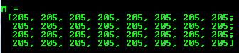
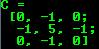
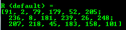
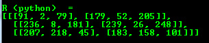
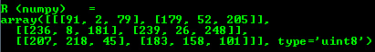
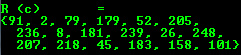

Mat - The Basic Image Container¶
Goal¶
We have multiple ways to acquire digital images from the real world: digital cameras, scanners, computed tomography, and magnetic resonance imaging to name a few. In every case what we (humans) see are images. However, when transforming this to our digital devices what we record are numerical values for each of the points of the image.

For example in the above image you can see that the mirror of the car is nothing more than a matrix containing all the intensity values of the pixel points. How we get and store the pixels values may vary according to our needs, but in the end all images inside a computer world may be reduced to numerical matrices and other information describing the matrix itself. OpenCV is a computer vision library whose main focus is to process and manipulate this information. Therefore, the first thing you need to be familiar with is how OpenCV stores and handles images.
Mat¶
OpenCV has been around since 2001. In those days the library was built around a C interface and to store the image in the memory they used a C structure called IplImage. This is the one you’ll see in most of the older tutorials and educational materials. The problem with this is that it brings to the table all the minuses of the C language. The biggest issue is the manual memory management. It builds on the assumption that the user is responsible for taking care of memory allocation and deallocation. While this is not a problem with smaller programs, once your code base grows it will be more of a struggle to handle all this rather than focusing on solving your development goal.
Luckily C++ came around and introduced the concept of classes making easier for the user through automatic memory management (more or less). The good news is that C++ is fully compatible with C so no compatibility issues can arise from making the change. Therefore, OpenCV 2.0 introduced a new C++ interface which offered a new way of doing things which means you do not need to fiddle with memory management, making your code concise (less to write, to achieve more). The main downside of the C++ interface is that many embedded development systems at the moment support only C. Therefore, unless you are targeting embedded platforms, there’s no point to using the old methods (unless you’re a masochist programmer and you’re asking for trouble).
The first thing you need to know about Mat is that you no longer need to manually allocate its memory and release it as soon as you do not need it. While doing this is still a possibility, most of the OpenCV functions will allocate its output data automatically. As a nice bonus if you pass on an already existing Mat object, which has already allocated the required space for the matrix, this will be reused. In other words we use at all times only as much memory as we need to perform the task.
Mat is basically a class with two data parts: the matrix header (containing information such as the size of the matrix, the method used for storing, at which address is the matrix stored, and so on) and a pointer to the matrix containing the pixel values (taking any dimensionality depending on the method chosen for storing) . The matrix header size is constant, however the size of the matrix itself may vary from image to image and usually is larger by orders of magnitude.
OpenCV is an image processing library. It contains a large collection of image processing functions. To solve a computational challenge, most of the time you will end up using multiple functions of the library. Because of this, passing images to functions is a common practice. We should not forget that we are talking about image processing algorithms, which tend to be quite computationally heavy. The last thing we want to do is further decrease the speed of your program by making unnecessary copies of potentially large images.
To tackle this issue OpenCV uses a reference counting system. The idea is that each Mat object has its own header, however the matrix may be shared between two instance of them by having their matrix pointers point to the same address. Moreover, the copy operators will only copy the headers and the pointer to the large matrix, not the data itself.
1 2 3 4 5 6 | Mat A, C; // creates just the header parts
A = imread(argv[1], CV_LOAD_IMAGE_COLOR); // here we'll know the method used (allocate matrix)
Mat B(A); // Use the copy constructor
C = A; // Assignment operator
|
All the above objects, in the end, point to the same single data matrix. Their headers are different, however, and making a modification using any of them will affect all the other ones as well. In practice the different objects just provide different access method to the same underlying data. Nevertheless, their header parts are different. The real interesting part is that you can create headers which refer to only a subsection of the full data. For example, to create a region of interest (ROI) in an image you just create a new header with the new boundaries:
1 2 | Mat D (A, Rect(10, 10, 100, 100) ); // using a rectangle
Mat E = A(Range::all(), Range(1,3)); // using row and column boundaries
|
Now you may ask if the matrix itself may belong to multiple Mat objects who takes responsibility for cleaning it up when it’s no longer needed. The short answer is: the last object that used it. This is handled by using a reference counting mechanism. Whenever somebody copies a header of a Mat object, a counter is increased for the matrix. Whenever a header is cleaned this counter is decreased. When the counter reaches zero the matrix too is freed. Sometimes you will want to copy the matrix itself too, so OpenCV provides the clone() and copyTo() functions.
1 2 3 | Mat F = A.clone();
Mat G;
A.copyTo(G);
|
Now modifying F or G will not affect the matrix pointed by the Mat header. What you need to remember from all this is that:
- Output image allocation for OpenCV functions is automatic (unless specified otherwise).
- You do not need to think about memory management with OpenCVs C++ interface.
- The assignment operator and the copy constructor only copies the header.
- The underlying matrix of an image may be copied using the clone() and copyTo() functions.
Storing methods¶
This is about how you store the pixel values. You can select the color space and the data type used. The color space refers to how we combine color components in order to code a given color. The simplest one is the gray scale where the colors at our disposal are black and white. The combination of these allows us to create many shades of gray.
For colorful ways we have a lot more methods to choose from. Each of them breaks it down to three or four basic components and we can use the combination of these to create the others. The most popular one is RGB, mainly because this is also how our eye builds up colors. Its base colors are red, green and blue. To code the transparency of a color sometimes a fourth element: alpha (A) is added.
There are, however, many other color systems each with their own advantages:
- RGB is the most common as our eyes use something similar, but keep in mind that the OpenCV display system uses BGR colors.
- The HSV and HLS decompose colors into their hue, saturation and value/luminance components, which is a more natural way for us to describe colors. You might, for example, dismiss the value component, making your algorithm less sensitive to the light conditions of the input image.
- YCrCb is used by the popular JPEG image format.
- CIE L*a*b* is a perceptually uniform color space, which comes handy if you need to measure the distance of a given color to another color.
Each of the color components has its own valid domains. This brings us to the data type used: how we store a component defines the control we have over its domain. The smallest data type possible is char, which means one byte or 8 bits. This may be unsigned (so can store values from 0 to 255) or signed (values from -127 to +127). Although in the case of three components (such as BGR) this already gives 16 million representable colors. We may acquire an even finer control by using the float (4 byte = 32 bit) or double (8 byte = 64 bit) data types for each component. Nevertheless, remember that increasing the size of a component also increases the size of the whole picture in the memory.
Creating a Mat object explicitly¶
In the Load, Modify, and Save an Image tutorial you have already learned how to write a matrix to an image file by using the imwrite() function. However, for debugging purposes it’s much more convenient to see the actual values. You can do this using the << operator of Mat. Be aware that this only works for two dimensional matrices.
Although Mat works really well as an image container, it is also a general matrix class. Therefore, it is possible to create and manipulate multidimensional matrices. You can create a Mat object in multiple ways:
Mat() Constructor
Mat M(2,2, CV_8UC3, Scalar(0,0,255)); cout << "M = " << endl << " " << M << endl << endl;

For two dimensional and multichannel images we first define their size: row and column count wise.
Then we need to specify the data type to use for storing the elements and the number of channels per matrix point. To do this we have multiple definitions constructed according to the following convention:
CV_[The number of bits per item][Signed or Unsigned][Type Prefix]C[The channel number]For instance, CV_8UC3 means we use unsigned char types that are 8 bit long and each pixel has three of these to form the three channels. These are predefined for up to four channel numbers. The Scalar is a four element short vector. Specify this and you can initialize all matrix points with a custom value. If you need more, you can create the type with the upper macro, setting the channel number in parentheses as shown below.
Use C/C++ arrays and initialize via constructor
int sz[3] = {2,2,2}; Mat L(3,sz, CV_8UC(1), Scalar::all(0));
The above example shows how to create a matrix with more than two dimensions. Specify the number of dimensions, then pass a pointer containing the size for each dimension, and the rest remains the same.
Create a header for an already existing IplImage pointer:
IplImage* img = cvLoadImage("greatwave.png", 1); Mat mtx(img); // convert IplImage* -> Mat
Create() function:
M.create(4,4, CV_8UC(2)); cout << "M = "<< endl << " " << M << endl << endl;
You cannot initialize the matrix values with this construction. It will only reallocate its matrix data memory if the new size will not fit into the old one.
MATLAB style initializers: zeros(), ones(), eye(). Specify the size and data type to use:
Mat E = Mat::eye(4, 4, CV_64F); cout << "E = " << endl << " " << E << endl << endl; Mat O = Mat::ones(2, 2, CV_32F); cout << "O = " << endl << " " << O << endl << endl; Mat Z = Mat::zeros(3,3, CV_8UC1); cout << "Z = " << endl << " " << Z << endl << endl;

For small matrices you may use comma separated initializers:
Mat C = (Mat_<double>(3,3) << 0, -1, 0, -1, 5, -1, 0, -1, 0); cout << "C = " << endl << " " << C << endl << endl;


Note
You can fill out a matrix with random values using the randu() function. You need to give the lower and upper value for the random values:
Mat R = Mat(3, 2, CV_8UC3);
randu(R, Scalar::all(0), Scalar::all(255));
Output formatting¶
In the previous examples you saw the default formatting option. OpenCV, however, allows you to format your matrix output:
Default
cout << "R (default) = " << endl << R << endl << endl;
Python
cout << "R (python) = " << endl << format(R,"python") << endl << endl;
Comma separated values (CSV)
cout << "R (csv) = " << endl << format(R,"csv" ) << endl << endl;

Numpy
cout << "R (numpy) = " << endl << format(R,"numpy" ) << endl << endl;
C
cout << "R (c) = " << endl << format(R,"C" ) << endl << endl;
Output of other common items¶
Other common OpenCV data structures can also be output via the << operator:
2D Point
Point2f P(5, 1); cout << "Point (2D) = " << P << endl << endl;

3D Point
Point3f P3f(2, 6, 7); cout << "Point (3D) = " << P3f << endl << endl;

std::vector via cv::Mat
vector<float> v; v.push_back( (float)CV_PI); v.push_back(2); v.push_back(3.01f); cout << "Vector of floats via Mat = " << Mat(v) << endl << endl;

std::vector of points
vector<Point2f> vPoints(20); for (size_t i = 0; i < vPoints.size(); ++i) vPoints[i] = Point2f((float)(i * 5), (float)(i % 7)); cout << "A vector of 2D Points = " << vPoints << endl << endl;

Most of the samples here have been included in a small console application. You can download it from here or in the core section of the cpp samples.
You can also find a quick video demonstration of this on YouTube.
Help and Feedback
You did not find what you were looking for?- Ask a question on the Q&A forum.
- If you think something is missing or wrong in the documentation, please file a bug report.